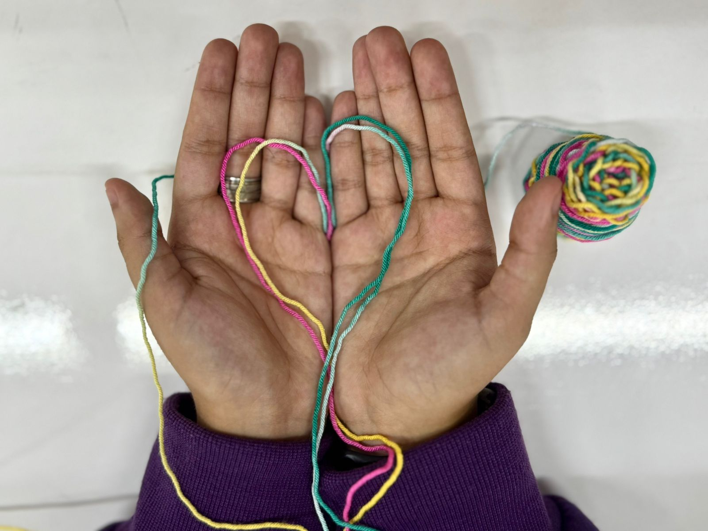

Bienestar emocional y salud mental
¿Qué es la salud mental?
La salud mental es un componente fundamental de nuestro bienestar general. No se limita solo a nuestro estado emocional, psicológico y social. Se refiere a la manera en que pensamos, sentimos y nos comportamos, y también afecta la forma en que manejamos el estrés, nos relacionamos con los demás, tomamos decisiones y enfrentamos los desafíos cotidianos.
Contrariamente a lo que algunas personas podrían creer, la salud mental no se limita a la ausencia de trastornos mentales. Incluye aspectos como condiciones como la depresión, la ansiedad o la esquizofrenia. Por el contrario, la salud mental también abarca la capacidad de disfrutar de la vida, relaciones interpersonales saludables y un sentido de bienestar emocional y psicológico.
Beneficios de la salud mental y bienestar emocional
Los beneficios de la salud mental y el bienestar emocional incluyen una mejor salud física, relaciones más fuertes, mayor resiliencia y la capacidad de afrontar el estrés. Estos beneficios también se traducen en un mejor rendimiento académico y laboral, un mayor sentido de propósito y satisfacción en la vida y la habilidad de recuperarse de las dificultades.

1. Mejora tu Salud física
Una buena salud mental está ligada a una mejor salud física, lo que puede incluir una recuperación más rápida de enfermedades.
2. Ayuda al estado de ánimo
Mantener el equilibrio emocional reduce el riesgo de padecer ansiedad, depresión y otros problemas psicológicos.
3. Mejora Fortalecimiento de la comunicación
La salud mental mejora las habilidades comunicativas y sociales, lo que permite relacionarse mejor con los demás
4. Fomento de la salud física

La salud mental está estrechamente ligada a la salud física. Un cuerpo saludable previene ciertas enfermedades y viceversa.